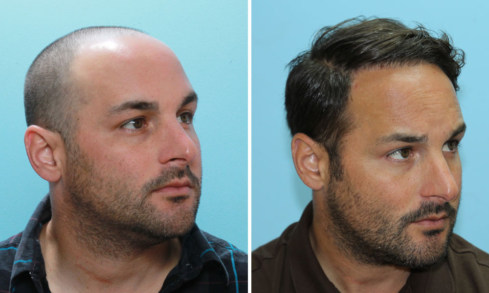

هي نوع من الجراحة التي تقوم بإزالة الشعر من المنطقة المليئة بالشعر لنقله إلى منطقة أخرى تعاني من الصلع أو الشعر الخفيف، ويقوم الأطباء بهذه التقنية في الولايات المتحدة منذ الخمسينيات، لكنها بالطبع تغيرت كثيرا في السنوات الأخيرة
نعم يمكن زراعة الشعر في الندبات، ولكن نسبة النجاح تكون أقل من 80 % . هل يمكن زراعة الشعر للنساء ؟ نعم يمكن ذلك، وبنسبة نجاح كبيرة جدا. اقرأ أيضا: أسباب تساقط الشعر عند النساء.. وأهم طرق العلاج.
ليس هناك أي خطر على مريض السكري النوع الثاني من زراعة الشعر مع بقاء نسبة السكر في الدم تحت السيطرة، وتأخذ عملية الشفاء وقتها مثل الشخص الطبيعي، أما في حالة مريض السكري من النوع الأول فمن الصعب معه السيطرة على نسبة السكر في الدم، ويجب التحضير جيدا قبل إجراء العملية ومراقبة نسبة السكر أثناء إجرائها، ويجب استشارة الطبيب الباطني المتابع للحالة أولا.
التدخين يؤثر على نشاط الدورة الدموية، وبالتالي يؤثر على صحة الشعر وبطبيعة الحال الشعر المزروع أيضا، فضعف الدورة الدموية يسبب قلة الأكسجين الواصل للخلايا وبالتالي تتأخر البصيلات في النمو وتبطأ عملية شفاء الجروح
يمكن للمريض أن يشعر بالألم فقط مع حقنة التخدير الموضعي ، غير ذلك لا يكون هناك أي ألم ويكون الخاضع للعملية واعي تماما. ما هي أقل وأكثر كمية يمكن زراعتها في الجلسة الواحدة ؟ تتراوح كمية الشعر الذي يمكن زراعته في الجلسة الواحدة من 2000 إلى 7000 شعرة، وقد تكفي الشخص جلسة واحدة إلا إذا كان الرأس خالي من الشعر تماما ما عدا مؤخرة الرأس فقط فيكفي جلستين.
تراوح جلسة زراعة الشعر بين 4 إلى 6 ساعات . هل الشعر المزروع يبدو طبيعياً ؟ نعم وخاصة مع المداومة على الأطعمة المغذية ، والمنتجات الطبيعية من الشامبوهات والكريمات. متى يمكن تصفيف الشعر أو حلاقته ؟ يمكن تصفيف الشعر أو حلاقته بعد ستة أشهر من إجراء العملية.
لشعر الصناعي مكون من ألياف صناعية ويمكن أن يحدث تفاعل للجسم معه فيرفضه الجسم ويلفظه للخارج، ويكون ذلك على شكل التهابات وبثور ، وعادة يتساقط بعد سنة من الزراعة، ويحتاج لأدوية لتقليل الالتهابات طول فترة تواجده ولا ينمو وبالتالي لا يُقص، ولأنه من ألياف صناعية لا يتحمل درجة الحرارة
ا لأن فروة الرأس تكون لينة ولا يجب لمسها، حتى تثبت الشعيرات المزروعة، وبعد استشارة الطبيب. هل يمكن زراعة اللحية و الشارب ؟ يمكن زراعة شعر اللحية والشارب في بعض المناطق فقط ، وخصوصا المناطق المصابة بندبات ولا يوجد بها بصيلات شعر .